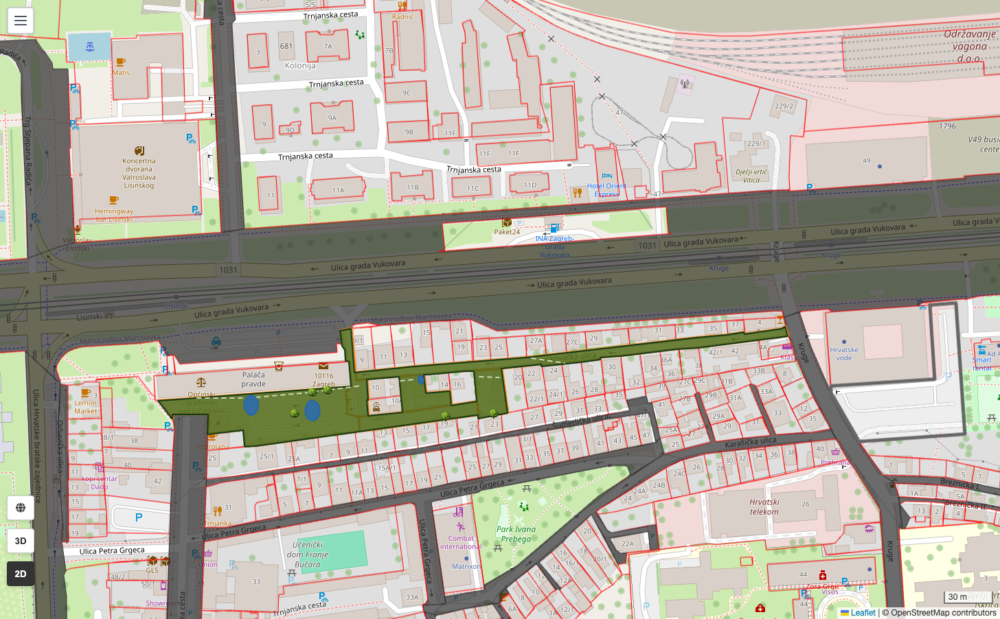
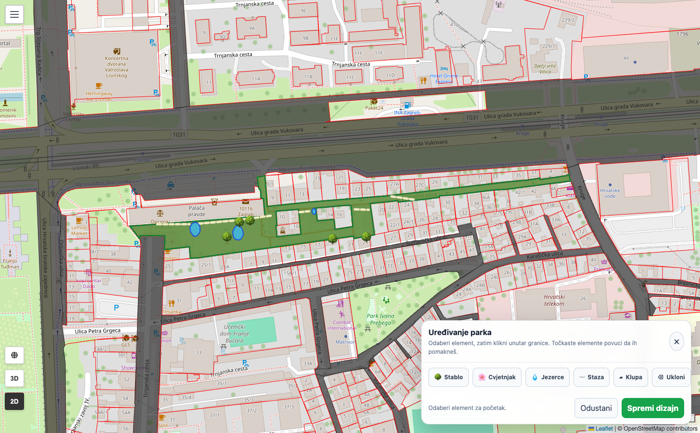

Prvo prostor, pa namještaj
Javni prostor nastaje jednim klikom — bez uređivača, bez parametara. Park, trg ili jezero odmah prekriju odabrane čestice. Tek nakon toga, ako želiš, otvaraš uređivač i u njega slažeš drveće, klupe, staze i fontane.
-
Odaberi čestice i klikni alat
Odaberi čestice (ili cijeli blok), otvori karticu Prijedlozi i u paleti „Izgradi” klikni Park, Trg ili Jezero. Prostor se primjenjuje odmah, preko spojenog obrisa odabranih čestica.
Trg ne počinje prazan. Dobiva fontanu u sredini, dva do četiri stola uz rubove i jedan kip. Park počinje kao čista zelena površina — sve na njemu je tvoje djelo. Jezero traži da čestice budu povezane.
Snimka zaslona uskoroPark nastaje jednim klikom, preko spojenog obrisa čestica. -
Otvori uređivač
Namještaj se dodaje nakon što prijedlog postoji. Otvori prijedlog parka ili trga i klikni Uredi geometriju. Uz dno karte pojavi se ploča Uređivanje parka (odnosno Uređivanje trga), a granica prostora iscrta se iscrtkano.
Uređivač ne radi u prozoru nego izravno na karti — možeš zumirati i pomicati se dok slažeš.
-
Postavi namještaj
Uputa na ploči kaže sve: „Odaberi element, zatim klikni unutar granice. Točkaste elemente povuci da ih pomakneš.”
Park Kako se postavlja 🌳 Stablo Jedan klik. Povuci ga da ga premjestiš. ▰ Klupa Jedan klik. 🌸 Cvjetnjak Krug — mora cijeli stati unutar granice. 💧 Jezerce Krug, isto pravilo. 〰 Staza Klikaj točke, pa Završi stazu (ili Enter). Trg Kako se postavlja ⛲ Fontana Jedan klik. 🌳 Stablo Jedan klik. ▰ Klupa Jedan klik. 🍽️ Stol Jedan klik — stol s terase, za ugostiteljski sadržaj. 🗿 Kip Jedan klik. Za brisanje odaberi Ukloni pa klikni element.
Sve mora biti unutar iscrtkane granice. Klikneš li izvan nje, javit će „Elemente postavljaj unutar granice strukture.”Zumiraj prije nego postaviš jezerce ili cvjetnjak. Veličina im ovisi o trenutačnoj razini zumiranja: izbliza dobiješ sitne, precizne elemente, izdaleka krupne.
Snimka zaslona uskoroUređivanje parka: odaberi element, klikni unutar iscrtkane granice. -
Spremi dizajn
Klikni Spremi dizajn. Potvrda glasi „Dizajn strukture je spremljen.” Odustani odbacuje sve što si postavio u toj sesiji.
-
Provjeri u 3D-u
Sve što si postavio postoji i u 3D prikazu — stabla, klupe, fontane i kipovi stoje točno tamo gdje si ih kliknuo. Park bez drveća u tlocrtu izgleda uredno, a u 3D-u prazno; tu se razlika najbolje vidi.
 Snimka zaslona uskoro
Snimka zaslona uskoro
Isti park u 3D-u — namještaj se prenosi jedan na jedan.